How to play
Tonight? There's only enough blood for one.
2–4 players · ages 14+ · 60–90 minutes
Pick your tier
Each table picks one way to play before setup. Everyone learns Beginner first. Deadly and Immortal only add to it.
Beginner
The goal
The town is dry and the Vein is nearly gone. Four factions want the last of the blood.
Be the last player standing. You're out when:
- all 3 of your Bloodwells are destroyed, or
- both of your Vampires are eliminated, or
- you're Staked (see below).
There's no turn limit.
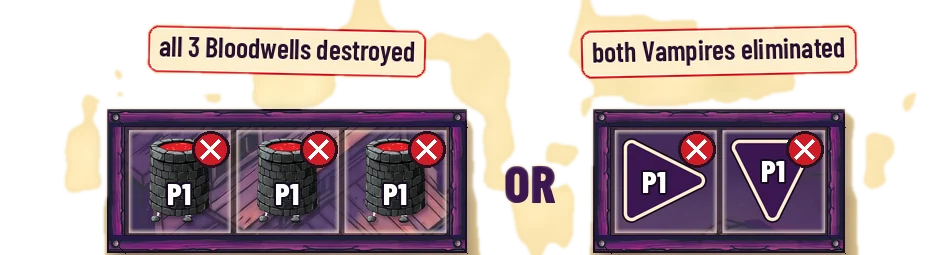
What you get
Each player picks a faction, first come, first served: Sheriff (blue), Bounty Hunter (green), Vigilante (gray) or Outlaw (red). Take your faction's 2 Vampires and 3 Bloodwells.
In Beginner you use only two of your faction cards: the AP tracker card (with your colored meeple) and the quick reference card. Leave the rest in the box.
Setup
- Take a layout card for your player count.
- Place every Vampire and Bloodwell exactly as the card shows, facings included. Each player takes the part of the map nearest them. The seat labels printed on the card don't matter.
- Put all 12 hazards (4 Tombstones, 4 Bear Traps, 4 Grave Dust) in a shared pool beside the board.
- Put the 3 Dynamite sticks in their crate beside the board.
- First player: whoever most recently saw their own blood. Play goes clockwise.
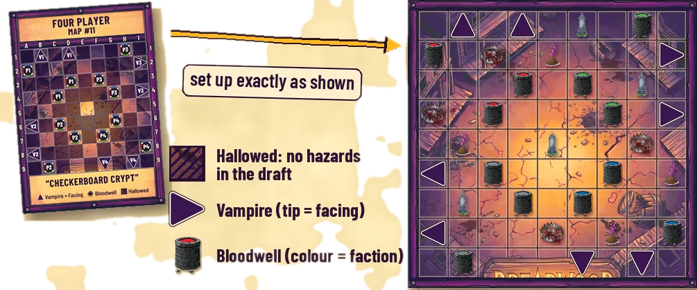
The layout card only matters at the start. After that, the board is yours to wreck.
Your turn
- Pick one Vampire to act with this turn.
- You get 5 AP (Action Points). Put your meeple on 5 on your AP tracker card.
- Spend AP on actions, in any order, as often as you like. Move the meeple down as you go.
- Spend every point. When the meeple slides off the card, your turn is over.
You can't save AP for later.
First round only, later seats start a little stronger: Player 1 (first player) 4 AP, Player 2 5, Player 3 6, Player 4 6. With fewer players, drop the missing seats. From round two, everyone gets 5. Starting on 6 with a card that only goes to 5? Keep the extra point in your head.
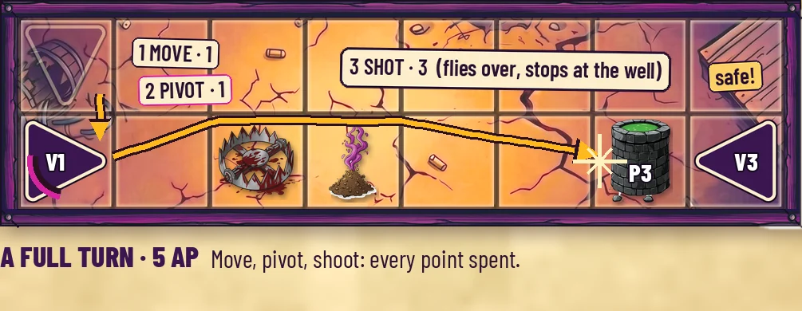
Actions
| Move. One square, only the way you're facing. Never diagonal, never off the board. | 1 AP |
| Pivot. Face north, east, south or west (a 180° turn is fine). The same Vampire can't Pivot twice in a row in one turn. | 1 AP |
| Standard Shot. Fire straight ahead, any distance. | 3 AP |
| Throw Hazard. Throw a hazard from the pool. | 1 AP |
| Place Dynamite. Put a stick on the square in front of you. | 3 AP |
| Bloodbath. Heal by ending a move next to a Bloodwell. | 0 AP |
Facing
Every Vampire faces north, east, south or west. Facing decides where you move, shoot, throw and place Dynamite. It also decides whether a Tombstone protects you.
What blocks you
- Two Vampires never share a square.
- Bloodwells, Dynamite and other Vampires block movement.
- You can step onto a Bear Trap or Grave Dust. It goes off and is used up.
- You can step onto a Tombstone if no other Vampire is on it.
Shooting
A Standard Shot flies straight ahead and stops at the first thing it hits. Friends count too.
- It flies over Bear Traps and Grave Dust.
- Vampire hit: it becomes Bleeding (red ring). Already Bleeding? It's eliminated.
- Bloodwell hit: destroyed. It leaves an empty square.
- Dynamite hit: it explodes.
- Tombstone hit: see Tombstone cover.
Tombstone cover
A Vampire on a Tombstone hides on the side it faces. The Tombstone always faces the same way as the Vampire on it. With no Vampire on it, its facing doesn't matter.
- Shot from the side it faces: the Tombstone breaks. The Vampire is safe.
- Shot from any other side (flanked): the Vampire is hit. The Tombstone stays.
- Empty Tombstone: it breaks. The shot stops.
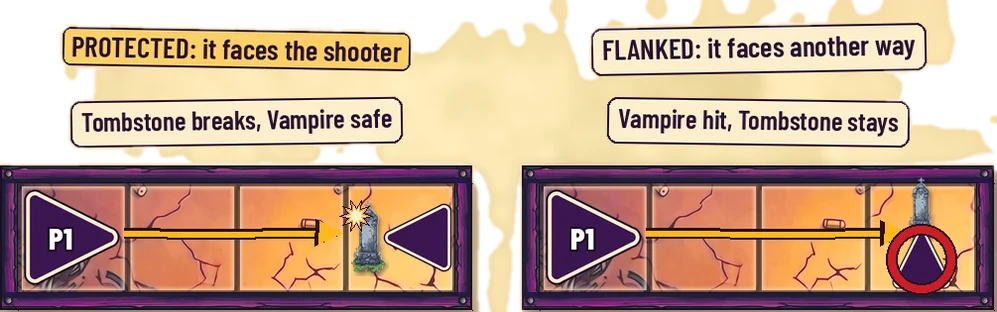
Health
Bleeding (red ring). Your first hit. Any hit while Bleeding eliminates you.
Cursed (magenta ring). From Grave Dust.
- Every action costs +1 AP, except Pivot and Bloodbath.
- No throwing hazards. No placing Dynamite.
- You can't enter a Tombstone square.
- Curses don't stack.
A Vampire can be Bleeding and Cursed at the same time.
Bloodbath: the only cure
End a move next to any Bloodwell, yours or an enemy's. Diagonals count.
- Clear Bleeding, Cursed or both.
- Always free, even when Cursed.
- Use it as often as you like.
If the square you step onto has a hazard, the hazard goes off first. A Bleeding Vampire that steps on a Bear Trap is eliminated before it can bathe.
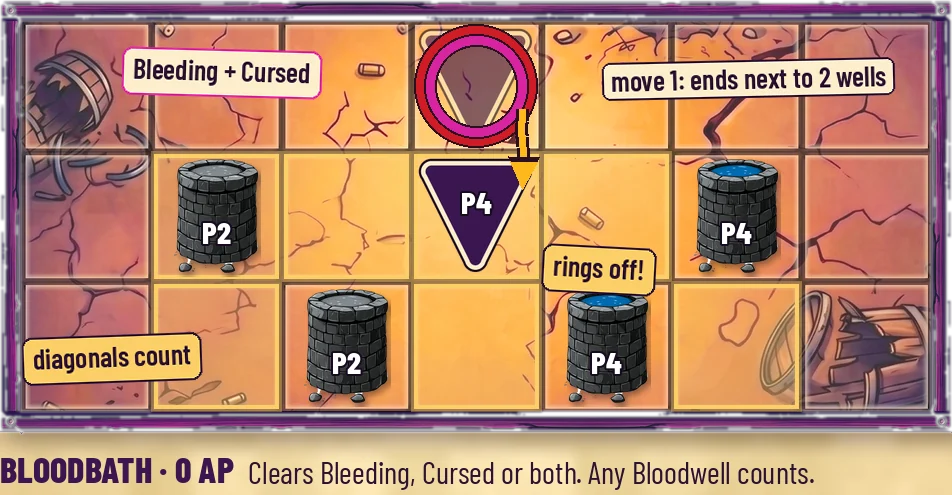
Hazards
Hazards wait in the shared pool. Throw Hazard (1 AP):
- Pick any type left in the pool.
- It lands 1, 2 or 3 squares ahead, the way you face, on an empty square.
- It flies over Bear Traps and Grave Dust.
- Tombstones, Bloodwells, Vampires and Dynamite block it. You can't throw past them. That throw just isn't allowed, and nothing is damaged.
- Pool empty? No throw. Cursed? No throw.
Hazards only ever go on empty squares. So you can't throw Grave Dust at a Vampire.
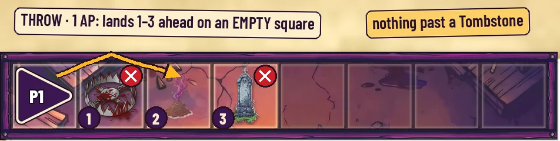
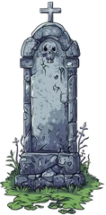
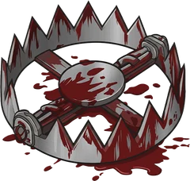
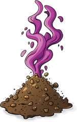
- Tombstone. Cover. One Vampire at most, and never a Cursed one.
- Bear Trap. Step on it: you're Bleeding. Already Bleeding? You're eliminated, and nobody gets credit (in Deadly and Immortal: no Vengeance and no Contract Payoff).
- Grave Dust. Step on it: you're Cursed. Already Cursed? It's just used up.
Once a hazard is on the board, it belongs to the board. When it's used up, broken or blown up, it goes back to the pool.
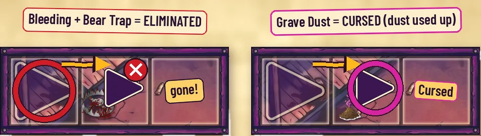
Dynamite
There are only 3 sticks. Dynamite is not a hazard.
Place Dynamite (3 AP): put a stick from the crate on the empty square directly in front of your Vampire. Not while Cursed. Crate empty? No placing.
It explodes only when a shot hits it or another blast reaches it. The blast hits the 8 squares around the stick:
- Vampires become Bleeding (already Bleeding: eliminated).
- Bloodwells are destroyed.
- Hazards are destroyed and go back to the pool.
- Other Dynamite explodes too.
Your own pieces get hurt. Tombstones give no cover.
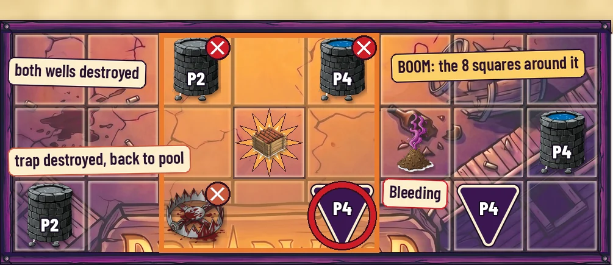
Each blast finishes before the next starts, and nothing is hit twice in one chain. Exploded sticks go back to the crate.
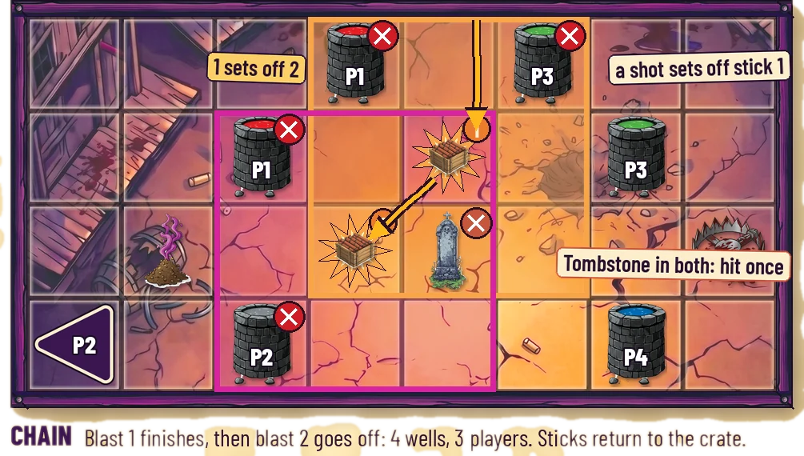
Can't spend it all?
If you get stuck mid-turn and can't spend exactly all your AP, undo actions until you can. Or perish.
Staked. At the start of your turn, if there's no way at all to spend exactly all your AP, you're Staked. You're out. Nobody gets credit for it.
The one exception: if your own Vampire dies during your turn, your turn can end with AP left over. That AP is lost.
When a player is out
Only their Vampires and Bloodwells leave the board. Hazards and Dynamite stay where they are. Down to one Vampire, or one or two Bloodwells? You're still in.
Winning
The last player standing wins.
GHOST TOWN. If the last players are all eliminated at the same moment (usually Dynamite), everyone shouts “GHOST TOWN!” together. Nobody wins. But also everyone wins.
You don't have to win. You just have to not lose.
Quick reference
The base game. Use only your faction's AP Tracker card and Quick Reference card: no faction abilities, no Silver Bullet, no bonus AP, no Hazard Draft. Lines marked Deadly+ or Immortal are not used in Beginner.
Setup
- Factions: first come, first served. One player per faction.
- Pick a layout card for your player count. Sit anywhere; take the part of the map nearest you and place your pieces and facings exactly as shown. Seat labels on the card don't matter.
- First player: whoever most recently saw their own blood. Play goes clockwise. In later games, first player moves one seat clockwise.
- No Hazard Draft: all 12 hazards start in the shared pool. The 3 dynamite sticks start in the dynamite supply.
Your turn
- Choose one active vampire. No exceptions, Vigilantes included.
- Take 5 AP and set your meeple on that number on your AP Tracker card.
- Round 1 only: first player 4, then clockwise 5, 6, 6.
- Spend AP on actions in any order, as often as you like.
- Spend all of it. Meeple slides off the card = turn over.
- Can't spend exactly all? Undo actions until you can.
- If, at the start of your turn, no sequence of actions can spend exactly all your AP, you are Staked: you lose and are eliminated. No one gets credit.
- Only exception: your active vampire dies mid-turn. The turn may end with AP unspent; that AP is lost.
- Tracker caps: Sheriff 5, Outlaw 5, Bounty Hunter 9, Vigilante 11. AP above the cap is tracked on trust.
AP costs
| Action | AP | Cursed |
|---|---|---|
| Move | 1 | 2 |
| Pivot | 1 | 1 |
| Standard Shot | 3 | 4 |
| Throw Hazard | 1 | not allowed |
| Place Dynamite | 3 | not allowed |
| Bloodbath | 0 | 0 |
Actions
- Move: 1 square straight ahead (facing direction). Never diagonal. Can't enter a blocked square or leave the board.
- Pivot: face N, S, E or W. Must change your facing (180° is fine). No vampire may pivot twice in a row in the same turn. Pivot memory resets each new turn.
- Standard Shot: straight ahead, any range. Stops at the first thing it hits. Can hit your own pieces.
- Throw Hazard: pick any hazard left in the pool. It lands 1, 2 or 3 squares ahead on an empty square. It flies over Bear Traps and Grave Dust only; anything else blocks it. Never sets off dynamite. Empty pool = no throw.
- Place Dynamite: on the empty square directly in front of you. Needs a stick in the supply.
Added in higher tiers (not used in Beginner)
- Deadly+ Faction abilities, bonus AP, the Silver Bullet (4 AP, 6 Cursed), and Vigilantes using both vampires.
- Immortal The Hazard Draft and Hallowed ground.
Health
- Two-Tap: first hit = Bleeding (red ring). Hit while Bleeding = eliminated.
- Cursed (magenta ring): +1 AP on everything except Pivot and Bloodbath. Can't throw hazards or place dynamite. Can't enter a Tombstone square. Doesn't stack.
- A vampire can be Bleeding and Cursed at once.
- Bloodbath (free): end any move (free moves too) next to any Bloodwell, diagonals included. Clears Bleeding, Cursed, or both. No limit. A hazard on the square you enter triggers first.
Shots and Tombstones
A shot meets, in order: empty square (continue), Bear Trap/Grave Dust (pass over), Tombstone (below), vampire (hit, stop), Bloodwell (destroyed, stop), dynamite (explodes, stop). Off the board = ends.
| Shot enters | Result |
|---|---|
| Tombstone alone | Tombstone destroyed. Shot stops. |
| Tombstone + vampire facing the shooter | Tombstone destroyed. Vampire safe. Shot stops. |
| Tombstone + vampire not facing the shooter | Vampire hit. Tombstone stays. Shot stops. |
- A Tombstone with a vampire on it always faces the same way as that vampire.
Hazards (4 of each, shared pool)
- Tombstone: cover. Max one vampire on it, never a Cursed one.
- Bear Trap: step on it = Bleeding (already Bleeding = eliminated). No one gets credit for a Bear Trap death.
- Grave Dust: step on it = Cursed (already Cursed = just cleared).
- Stepping on a Bear Trap or Grave Dust uses it up. Shots pass over both.
- Hazards go only on empty squares, never on a vampire, Bloodwell, dynamite or another hazard.
- Anything that leaves the board goes back to the pool. Once on the board, a hazard belongs to the board.
- A throw can't pass a vampire, Bloodwell, Tombstone or Dynamite. That throw is simply not allowed, and nothing is damaged.
Dynamite and chains
- Explodes when hit by any shot or caught in another blast.
- Blast hits all 8 squares around it: vampires Bleed (Bleeding = eliminated), Bloodwells destroyed, hazards destroyed, other dynamite chains. Friendly pieces too. No Tombstone cover.
- Each blast resolves fully before the next. Nothing is hit twice in one chain.
- Credit goes to whoever fired the shot that set off the first stick.
- Exploded sticks return to the supply (3 total).
Elimination and victory
- You're out when all 3 Bloodwells are destroyed or both vampires are eliminated. Only your vampires and Bloodwells leave the board.
- The full chain resolves before anyone is checked for out. No one wins mid-turn.
- Last player standing wins.
- GHOST TOWN! If simultaneous eliminations leave no one standing, nobody wins. Everyone shouts "GHOST TOWN!" together. Then nobody wins. But also everyone wins.
- No turn limit.
Deadly
Beginner + your faction cards
Everything in Beginner still applies. Now you also use:
- your faction's three ability cards,
- the Silver Bullet, and
- bonus AP from your abilities.
Once-per-game cards are once per player, not per Vampire. Turn the card over when you use it.
The Silver Bullet
Every player has one. Once per game.
- 4 AP total: 1 to load, 3 to fire (6 if Cursed).
- Load and fire in the same turn, or not at all.
- A hit eliminates a Vampire at once, even if it wasn't Bleeding.
- It stops at a Tombstone like any shot (unless a Bounty Hunter fires it).
Bonus AP
Add these to your AP tracker at the start of your turn (or when they happen):
- Bound by Blood (Vigilante): +1 AP.
- Vengeance is Mine (Vigilante): +4 AP.
- Contract Payoff (Bounty Hunter): +2 or +4 AP, once per game.
The factions
Sheriff
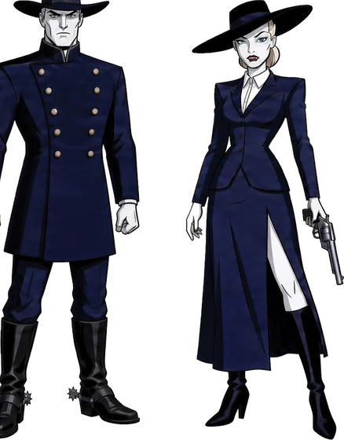
Under My Protection. While one of your Sheriffs stands in the 8 squares around one of your Bloodwells, no bullet can harm that well. That's any shot, Silver Bullet, Rampage or Hand Cannon, yours or an enemy's. It never stops Dynamite.
Swift Justice. At the very end of your turn, after your meeple slides off, your active Sheriff may move once and/or pivot once, in either order, for free.
Order Restored (2 AP, once per game). Bring back a fallen Sheriff on an empty square next to your surviving Sheriff or one of your own Bloodwells (diagonals count). It comes back healthy, facing any way, and can't act this turn.
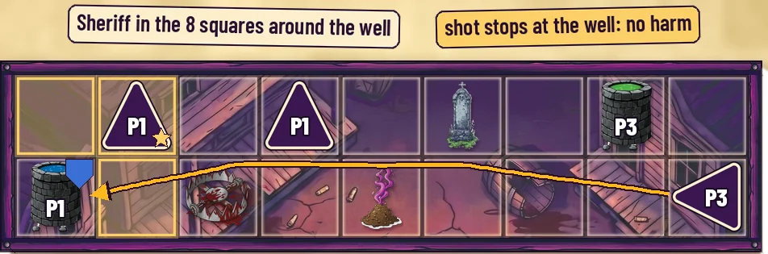
Bounty Hunter
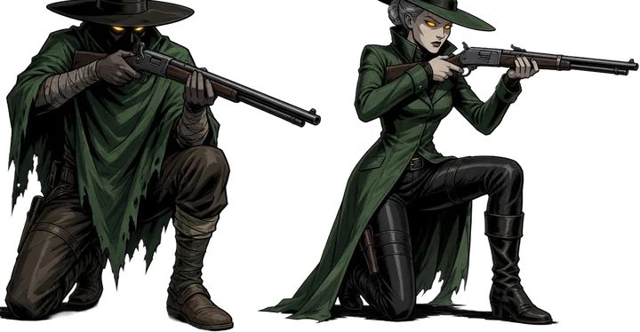
Sharpshooter. Your Standard Shots and Silver Bullet pass through Tombstones without breaking them, and hit a Vampire hiding there no matter which way it faces.
Marked Man. A Standard Shot that hits an enemy Vampire cleanly (through no Tombstone) also Curses it.
Contract Payoff (once per game). The marker starts at +2. Each time you take down an enemy Vampire or Bloodwell, you must choose:
- take +2 AP now (card used), or
- raise the marker to +4. Your next kill then automatically pays +4 (card used then).
Several kills from one command pay only once. You may raise the marker on one kill and cash it on a later kill in the same turn.
Vigilante
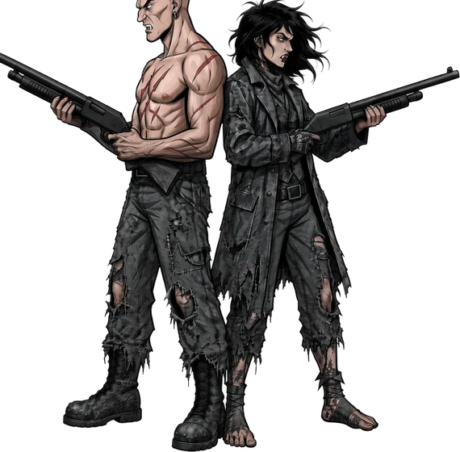
Fluid Malice. Use both Vigilantes in the same turn, switching freely, sharing one AP pool. You can pivot one, then the other.
Bound by Blood. +1 AP at the start of your turn if both Vigilantes are alive and fit inside one 4 × 4 block.
Vengeance is Mine. +4 AP, once per turn, when another player eliminates one of your Vampires or destroys one of your Bloodwells.
- Spend any of it right away, even on their turn.
- Roll the rest into your next turn, where you must spend every point as usual.
Your own shots and chains never trigger it. A Bear Trap kill gives no one credit, so it never triggers Vengeance.
Outlaw
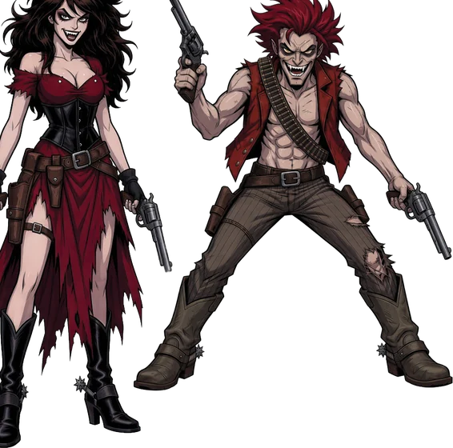
Daring Escape. Right after your Outlaw destroys an enemy Bloodwell, take a free bonus turn: up to 2 moves and 2 pivots, in any order, now or never. Two Pivots in a row are allowed here. Once per turn.
Rampage (3 AP, once per game). Two Standard Shots at once: one straight out the Outlaw's left, one out its right. Each breaks a Tombstone and stops there.
Hand Cannon (4 AP, once per game). Hits everything in the 5 squares ahead:
- Vampires become Bleeding (already Bleeding: eliminated).
- Bloodwells and hazards are destroyed (Under My Protection still guards a well).
- Tombstones are smashed, and it keeps going.
- Dynamite in its path goes off after the bullet finishes.
A Vampire hit by the Hand Cannon and then by the blast it sets off? That combo kill is called Dust to Dust. It's just a name, with no extra rules effect.
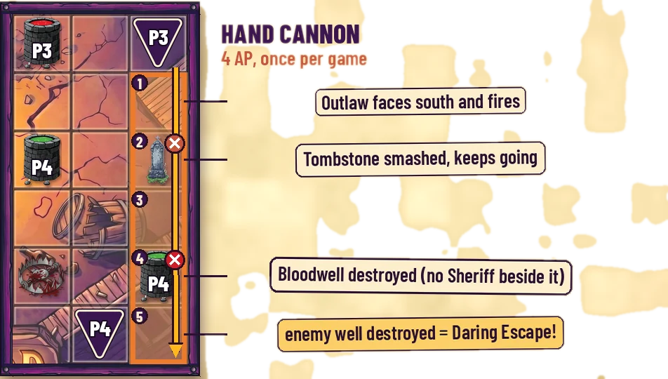
Quick reference
Lines marked Deadly+ are in Deadly and Immortal only. Everything else is the same in every tier.
Setup
- Factions: first come, first served. One player per faction.
- Pick a layout card for your player count. Sit anywhere; take the part of the map nearest you and place your pieces and facings exactly as shown. Seat labels on the card don't matter.
- First player: whoever most recently saw their own blood. Play goes clockwise. In later games, first player moves one seat clockwise.
- No Hazard Draft: all 12 hazards start in the shared pool. The 3 dynamite sticks start in the dynamite supply.
Your turn
- Choose one active vampire. Deadly+ Vigilantes use both (Fluid Malice).
- Take 5 AP and set your meeple on that number on your AP Tracker card.
- Round 1 only: first player 4, then clockwise 5, 6, 6.
- Deadly+ Bonus AP: Bound by Blood +1, Vengeance is Mine +4, Contract Payoff +2/+4, plus any rolled-over Vengeance AP.
- Spend AP on actions in any order, as often as you like.
- Spend all of it. Meeple slides off the card = turn over.
- Can't spend exactly all? Undo actions until you can.
- If, at the start of your turn, no sequence of actions can spend exactly all your AP, you are Staked: you lose and are eliminated. No one gets credit.
- Only exception: your own vampire dies mid-turn. Leftover AP is lost. Deadly+ A Vigilante with a living partner must spend the rest with it.
- Tracker caps: Sheriff 5, Outlaw 5, Bounty Hunter 9, Vigilante 11. AP above the cap is tracked on trust.
AP costs
| Action | AP | Cursed |
|---|---|---|
| Move | 1 | 2 |
| Pivot | 1 | 1 |
| Standard Shot | 3 | 4 |
| Throw Hazard | 1 | not allowed |
| Place Dynamite | 3 | not allowed |
| Bloodbath | 0 | 0 |
| Deadly+ Silver Bullet (load 1 + fire 3) | 4 | 6 |
| Deadly+ Rampage (Outlaw) | 3 | 4 |
| Deadly+ Hand Cannon (Outlaw) | 4 | 5 |
| Deadly+ Order Restored (Sheriff) | 2 | 3 |
| Deadly+ Free moves (Swift Justice, Daring Escape) | 0 | 0 |
Actions
- Move: 1 square straight ahead (facing direction). Never diagonal. Can't enter a blocked square or leave the board.
- Pivot: face N, S, E or W. Must change your facing (180° is fine). No vampire may pivot twice in a row in the same turn. Pivot memory resets each new turn.
- Deadly+ Vigilantes may pivot one vampire, then the other.
- Deadly+ Daring Escape may pivot twice in a row.
- Standard Shot: straight ahead, any range. Stops at the first thing it hits. Can hit your own pieces.
- Throw Hazard: pick any hazard left in the pool. It lands 1, 2 or 3 squares ahead on an empty square. It flies over Bear Traps and Grave Dust only; anything else blocks it. Never sets off dynamite. Empty pool = no throw.
- Place Dynamite: on the empty square directly in front of you. Needs a stick in the supply.
- Deadly+ Silver Bullet: load and fire in the same turn. Once per game. A hit eliminates at once.
- Deadly+ Faction abilities: see your faction card.
Health
- Two-Tap: first hit = Bleeding (red ring). Hit while Bleeding = eliminated.
- Cursed (magenta ring): +1 AP on everything except Pivot and Bloodbath. Can't throw hazards or place dynamite. Can't enter a Tombstone square. Doesn't stack.
- A vampire can be Bleeding and Cursed at once.
- Bloodbath (free): end any move (free moves too) next to any Bloodwell, diagonals included. Clears Bleeding, Cursed, or both. No limit. A hazard on the square you enter triggers first.
Shots and Tombstones
A shot meets, in order: empty square (continue), Bear Trap/Grave Dust (pass over), Tombstone (below), vampire (hit, stop), Bloodwell (destroyed, stop), dynamite (explodes, stop). Off the board = ends.
| Shot enters | Result |
|---|---|
| Tombstone alone | Tombstone destroyed. Shot stops. |
| Tombstone + vampire facing the shooter | Tombstone destroyed. Vampire safe. Shot stops. |
| Tombstone + vampire not facing the shooter | Vampire hit. Tombstone stays. Shot stops. |
- Deadly+ Sharpshooter (Bounty Hunter) passes through Tombstones and hits whoever shelters there.
- Deadly+ Hand Cannon destroys Tombstones and keeps going.
- Deadly+ Under My Protection (Sheriff) guards a Sheriff's Bloodwells, while one of their Sheriffs is next to them, from every bullet, Hand Cannon included. Never from dynamite.
- A Tombstone with a vampire on it always faces the same way as that vampire.
Hazards (4 of each, shared pool)
- Tombstone: cover. Max one vampire on it, never a Cursed one.
- Bear Trap: step on it = Bleeding (already Bleeding = eliminated). No one gets credit for a Bear Trap death.
- Grave Dust: step on it = Cursed (already Cursed = just cleared).
- Stepping on a Bear Trap or Grave Dust uses it up. Shots pass over both.
- Hazards go only on empty squares, never on a vampire, Bloodwell, dynamite or another hazard.
- Anything that leaves the board goes back to the pool. Once on the board, a hazard belongs to the board.
- A throw can't pass a vampire, Bloodwell, Tombstone or Dynamite. That throw is simply not allowed, and nothing is damaged.
Dynamite and chains
- Explodes when hit by any shot (Hand Cannon too) or caught in another blast.
- Blast hits all 8 squares around it: vampires Bleed (Bleeding = eliminated), Bloodwells destroyed, hazards destroyed, other dynamite chains. Friendly pieces too. No Tombstone cover.
- Each blast resolves fully before the next. Nothing is hit twice in one chain.
- Credit goes to whoever fired the shot that set off the first stick.
- Exploded sticks return to the supply (3 total).
- Deadly+ Dust to Dust: a vampire hit by the Hand Cannon can also be hit by the blast it sets off.
Elimination and victory
- You're out when all 3 Bloodwells are destroyed or both vampires are eliminated. Only your vampires and Bloodwells leave the board.
- The full chain resolves before anyone is checked for out. No one wins mid-turn.
- Last player standing wins.
- GHOST TOWN! If simultaneous eliminations leave no one standing, nobody wins. Everyone shouts "GHOST TOWN!" together. Then nobody wins. But also everyone wins.
- No turn limit.
Faction cards
Once-per-game cards are per player, not per vampire. Turn the card over after use. Factions are picked first come, first served. One player per faction.
Silver Bullet
Load 1 + fire 3 = 4 AP (6 if Cursed). Load and fire in the same turn, or not at all. Once per game; turn the card over after use.
- Fires straight ahead, any range, like a shot. A hit eliminates at once (skips Two-Tap).
- Stops at a Tombstone like a normal shot (Bounty Hunters' Sharpshooter passes through).
- Under My Protection guards Bloodwells from it.
Sheriffs
Under My Protection
No bullet harms your Bloodwell while one of your Sheriffs is in the 8 squares around it. That's every bullet, yours or an enemy's: Standard Shot, Silver Bullet, Rampage and Hand Cannon. It never stops dynamite. It's on or off: two Sheriffs change nothing.
Swift Justice
At the very end of your turn, after your meeple slides off the card, your active Sheriff may move once and/or pivot once, in either order, for 0 AP. This is a bonus turn, so pivot memory resets. It triggers hazards, and Bloodbath works after it.
Order Restored
Revive your vanquished Sheriff on an empty square next to (diagonals included) your surviving Sheriff or one of your own surviving Bloodwells, never an enemy's. It returns healthy, facing N, S, E or W. It can't act this turn and is never your active vampire this turn.
Bounty Hunters
Sharpshooter
Your Standard Shots and Silver Bullet pass through Tombstones without destroying them, and hit a vampire sheltering there whichever way it faces.
Marked Man
A Standard Shot that hits an enemy vampire cleanly (no Tombstone passed through) also Curses it. An already Cursed target gets nothing more.
Contract Payoff
The marker starts at +2. When you vanquish an enemy vampire or Bloodwell, you must choose one:
- cash +2 AP now (card used, turn it over), or
- move the marker to +4. A later kill then pays +4 (card used).
Moving the marker doesn't use the card. Several kills from one command pay once. Chain kills count if you fired the shot that set off the chain. Bear Trap deaths and Staked players give no credit.
Raising on one kill and cashing +4 on a later kill in the same turn is allowed.
Vigilantes
Fluid Malice
Switch freely between both Vigilantes during your turn, sharing one AP pool. No vampire may pivot twice in a row in the same turn, but you may pivot one Vigilante and then the other. If one Vigilante dies on your turn, spend the rest of your AP with the other, or the turn is invalid.
Bound by Blood
+1 AP at the start of your turn if both Vigilantes are alive and inside a 4x4 block (no more than 3 squares apart in any direction). Add it to your AP Tracker at the start of the turn.
Vengeance is Mine
+4 AP, once per turn, when another player eliminates one of your vampires or destroys one of your Bloodwells. It never triggers on your own turn or from your own chain.
- Spend any or all of it right when the loss resolves, even on another player's turn, at normal costs. Either living Vigilante may spend it.
- While spending it, pivot memory resets and once-per-game cards (like the Silver Bullet) can be used.
- Whatever you don't spend rolls into your next turn. Then the normal rule applies: spend all your AP.
- No cap. AP above 11 is tracked on trust.
Outlaws
Daring Escape
Right after your Outlaw destroys an enemy Bloodwell (by Hand Cannon or a chain you set off too, after the blasts resolve): a free bonus turn of up to 2 moves and 2 pivots, in any order. Use it now or lose it. Once per turn. It may pivot twice in a row. It triggers hazards.
Rampage
Fire two Standard Shots at once, straight left and straight right of your facing. The left bullet resolves fully first, explosions included, then the right. Each destroys a Tombstone and stops.
Hand Cannon
Hits everything in the 5 squares ahead. Vampires Bleed (already Bleeding = eliminated). Bloodwells and hazards are destroyed, except Bloodwells guarded by Under My Protection. Tombstones are destroyed and give no cover; the shot keeps going. Every dynamite stick in those 5 squares explodes after the bullet finishes its path.
Dust to Dust: a vampire hit by the Hand Cannon can also be hit by the blast it sets off. A healthy vampire can go Bleeding, then down, in one shot.
Immortal
Deadly + the Hazard Draft
Everything in Deadly still applies. The only change is at setup: instead of leaving all 12 hazards in the pool, players draft them onto the board.
The Hazard Draft
Do this after placing Vampires and Bloodwells, before the first turn.
- The player who takes the last turn drafts first. Then drafting goes counter-clockwise.
- On your pick, take any hazard from the pool and place it right away.
- It must go on an empty square: no Vampire, Bloodwell, Dynamite or other hazard.
- It can't go on a Hallowed square (striped on the layout card).
| 2 players: 4 each (4 stay in the pool) | 4 |
| 3 players: 3 each (3 stay in the pool) | 3 |
| 4 players: 3 each (the pool is empty) | 3 |
A drafted Tombstone can face any way: dealer's choice.
Dynamite is never drafted.
Hazards left in the pool can be thrown later by anyone. Hallowed squares only matter during the draft. After that, throw anywhere you can reach.
Quick reference
Lines marked Deadly+ are in Deadly and Immortal only. Lines marked Immortal are in Immortal only. Everything else is the same in every tier.
Setup
- Factions: first come, first served. One player per faction.
- Pick a layout card for your player count. Sit anywhere; take the part of the map nearest you and place your pieces and facings exactly as shown. Seat labels on the card don't matter.
- First player: whoever most recently saw their own blood. Play goes clockwise. In later games, first player moves one seat clockwise.
- Immortal Hazard Draft: the player who goes last drafts first, then counter-clockwise. Each pick: take any hazard from the pool and place it on an empty square that is not Hallowed ground (marked on the layout card). Picks each: 2P 4, 3P 3, 4P 3. See the Hazard Draft sheet.
- The 3 dynamite sticks start in the dynamite supply. They are never drafted.
Your turn
- Choose one active vampire. Deadly+ Vigilantes use both (Fluid Malice).
- Take 5 AP and set your meeple on that number on your AP Tracker card.
- Round 1 only: first player 4, then clockwise 5, 6, 6.
- Deadly+ Bonus AP: Bound by Blood +1, Vengeance is Mine +4, Contract Payoff +2/+4, plus any rolled-over Vengeance AP.
- Spend AP on actions in any order, as often as you like.
- Spend all of it. Meeple slides off the card = turn over.
- Can't spend exactly all? Undo actions until you can.
- If, at the start of your turn, no sequence of actions can spend exactly all your AP, you are Staked: you lose and are eliminated. No one gets credit.
- Only exception: your own vampire dies mid-turn. Leftover AP is lost. Deadly+ A Vigilante with a living partner must spend the rest with it.
- Tracker caps: Sheriff 5, Outlaw 5, Bounty Hunter 9, Vigilante 11. AP above the cap is tracked on trust.
AP costs
| Action | AP | Cursed |
|---|---|---|
| Move | 1 | 2 |
| Pivot | 1 | 1 |
| Standard Shot | 3 | 4 |
| Throw Hazard | 1 | not allowed |
| Place Dynamite | 3 | not allowed |
| Bloodbath | 0 | 0 |
| Deadly+ Silver Bullet (load 1 + fire 3) | 4 | 6 |
| Deadly+ Rampage (Outlaw) | 3 | 4 |
| Deadly+ Hand Cannon (Outlaw) | 4 | 5 |
| Deadly+ Order Restored (Sheriff) | 2 | 3 |
| Deadly+ Free moves (Swift Justice, Daring Escape) | 0 | 0 |
Actions
- Move: 1 square straight ahead (facing direction). Never diagonal. Can't enter a blocked square or leave the board.
- Pivot: face N, S, E or W. Must change your facing (180° is fine). No vampire may pivot twice in a row in the same turn. Pivot memory resets each new turn.
- Deadly+ Vigilantes may pivot one vampire, then the other.
- Deadly+ Daring Escape may pivot twice in a row.
- Standard Shot: straight ahead, any range. Stops at the first thing it hits. Can hit your own pieces.
- Throw Hazard: pick any hazard left in the pool. It lands 1, 2 or 3 squares ahead on an empty square. It flies over Bear Traps and Grave Dust only; anything else blocks it. Never sets off dynamite. Empty pool = no throw.
- Place Dynamite: on the empty square directly in front of you. Needs a stick in the supply.
- Deadly+ Silver Bullet: load and fire in the same turn. Once per game. A hit eliminates at once.
- Deadly+ Faction abilities: see your faction card.
Health
- Two-Tap: first hit = Bleeding (red ring). Hit while Bleeding = eliminated.
- Cursed (magenta ring): +1 AP on everything except Pivot and Bloodbath. Can't throw hazards or place dynamite. Can't enter a Tombstone square. Doesn't stack.
- A vampire can be Bleeding and Cursed at once.
- Bloodbath (free): end any move (free moves too) next to any Bloodwell, diagonals included. Clears Bleeding, Cursed, or both. No limit. A hazard on the square you enter triggers first.
Shots and Tombstones
A shot meets, in order: empty square (continue), Bear Trap/Grave Dust (pass over), Tombstone (below), vampire (hit, stop), Bloodwell (destroyed, stop), dynamite (explodes, stop). Off the board = ends.
| Shot enters | Result |
|---|---|
| Tombstone alone | Tombstone destroyed. Shot stops. |
| Tombstone + vampire facing the shooter | Tombstone destroyed. Vampire safe. Shot stops. |
| Tombstone + vampire not facing the shooter | Vampire hit. Tombstone stays. Shot stops. |
- Deadly+ Sharpshooter (Bounty Hunter) passes through Tombstones and hits whoever shelters there.
- Deadly+ Hand Cannon destroys Tombstones and keeps going.
- Deadly+ Under My Protection (Sheriff) guards a Sheriff's Bloodwells, while one of their Sheriffs is next to them, from every bullet, Hand Cannon included. Never from dynamite.
- A Tombstone with a vampire on it always faces the same way as that vampire.
Hazards (4 of each, shared pool)
- Immortal Hallowed ground only matters during the draft. After that, throw anywhere you can reach.
- Immortal After the draft, the pool holds 4 hazards (2P), 3 (3P) or none (4P).
- Tombstone: cover. Max one vampire on it, never a Cursed one.
- Bear Trap: step on it = Bleeding (already Bleeding = eliminated). No one gets credit for a Bear Trap death.
- Grave Dust: step on it = Cursed (already Cursed = just cleared).
- Stepping on a Bear Trap or Grave Dust uses it up. Shots pass over both.
- Hazards go only on empty squares, never on a vampire, Bloodwell, dynamite or another hazard.
- Anything that leaves the board goes back to the pool. Once on the board, a hazard belongs to the board.
- A throw can't pass a vampire, Bloodwell, Tombstone or Dynamite. That throw is simply not allowed, and nothing is damaged.
Dynamite and chains
- Explodes when hit by any shot (Hand Cannon too) or caught in another blast.
- Blast hits all 8 squares around it: vampires Bleed (Bleeding = eliminated), Bloodwells destroyed, hazards destroyed, other dynamite chains. Friendly pieces too. No Tombstone cover.
- Each blast resolves fully before the next. Nothing is hit twice in one chain.
- Credit goes to whoever fired the shot that set off the first stick.
- Exploded sticks return to the supply (3 total).
- Deadly+ Dust to Dust: a vampire hit by the Hand Cannon can also be hit by the blast it sets off.
Elimination and victory
- You're out when all 3 Bloodwells are destroyed or both vampires are eliminated. Only your vampires and Bloodwells leave the board.
- The full chain resolves before anyone is checked for out. No one wins mid-turn.
- Last player standing wins.
- GHOST TOWN! If simultaneous eliminations leave no one standing, nobody wins. Everyone shouts "GHOST TOWN!" together. Then nobody wins. But also everyone wins.
- No turn limit.
Faction cards
Once-per-game cards are per player, not per vampire. Turn the card over after use. Factions are picked first come, first served. One player per faction.
Silver Bullet
Load 1 + fire 3 = 4 AP (6 if Cursed). Load and fire in the same turn, or not at all. Once per game; turn the card over after use.
- Fires straight ahead, any range, like a shot. A hit eliminates at once (skips Two-Tap).
- Stops at a Tombstone like a normal shot (Bounty Hunters' Sharpshooter passes through).
- Under My Protection guards Bloodwells from it.
Sheriffs
Under My Protection
No bullet harms your Bloodwell while one of your Sheriffs is in the 8 squares around it. That's every bullet, yours or an enemy's: Standard Shot, Silver Bullet, Rampage and Hand Cannon. It never stops dynamite. It's on or off: two Sheriffs change nothing.
Swift Justice
At the very end of your turn, after your meeple slides off the card, your active Sheriff may move once and/or pivot once, in either order, for 0 AP. This is a bonus turn, so pivot memory resets. It triggers hazards, and Bloodbath works after it.
Order Restored
Revive your vanquished Sheriff on an empty square next to (diagonals included) your surviving Sheriff or one of your own surviving Bloodwells, never an enemy's. It returns healthy, facing N, S, E or W. It can't act this turn and is never your active vampire this turn.
Bounty Hunters
Sharpshooter
Your Standard Shots and Silver Bullet pass through Tombstones without destroying them, and hit a vampire sheltering there whichever way it faces.
Marked Man
A Standard Shot that hits an enemy vampire cleanly (no Tombstone passed through) also Curses it. An already Cursed target gets nothing more.
Contract Payoff
The marker starts at +2. When you vanquish an enemy vampire or Bloodwell, you must choose one:
- cash +2 AP now (card used, turn it over), or
- move the marker to +4. A later kill then pays +4 (card used).
Moving the marker doesn't use the card. Several kills from one command pay once. Chain kills count if you fired the shot that set off the chain. Bear Trap deaths and Staked players give no credit.
Raising on one kill and cashing +4 on a later kill in the same turn is allowed.
Vigilantes
Fluid Malice
Switch freely between both Vigilantes during your turn, sharing one AP pool. No vampire may pivot twice in a row in the same turn, but you may pivot one Vigilante and then the other. If one Vigilante dies on your turn, spend the rest of your AP with the other, or the turn is invalid.
Bound by Blood
+1 AP at the start of your turn if both Vigilantes are alive and inside a 4x4 block (no more than 3 squares apart in any direction). Add it to your AP Tracker at the start of the turn.
Vengeance is Mine
+4 AP, once per turn, when another player eliminates one of your vampires or destroys one of your Bloodwells. It never triggers on your own turn or from your own chain.
- Spend any or all of it right when the loss resolves, even on another player's turn, at normal costs. Either living Vigilante may spend it.
- While spending it, pivot memory resets and once-per-game cards (like the Silver Bullet) can be used.
- Whatever you don't spend rolls into your next turn. Then the normal rule applies: spend all your AP.
- No cap. AP above 11 is tracked on trust.
Outlaws
Daring Escape
Right after your Outlaw destroys an enemy Bloodwell (by Hand Cannon or a chain you set off too, after the blasts resolve): a free bonus turn of up to 2 moves and 2 pivots, in any order. Use it now or lose it. Once per turn. It may pivot twice in a row. It triggers hazards.
Rampage
Fire two Standard Shots at once, straight left and straight right of your facing. The left bullet resolves fully first, explosions included, then the right. Each destroys a Tombstone and stops.
Hand Cannon
Hits everything in the 5 squares ahead. Vampires Bleed (already Bleeding = eliminated). Bloodwells and hazards are destroyed, except Bloodwells guarded by Under My Protection. Tombstones are destroyed and give no cover; the shot keeps going. Every dynamite stick in those 5 squares explodes after the bullet finishes its path.
Dust to Dust: a vampire hit by the Hand Cannon can also be hit by the blast it sets off. A healthy vampire can go Bleeding, then down, in one shot.
Hazard Draft
In Beginner and Deadly there is no draft: all 12 hazards start in the shared pool.
Draft order
- The player who takes their turn last drafts first.
- Then drafting goes counter-clockwise.
- Keep going until everyone has made their picks.
| Players | Each drafts | Left in the pool |
|---|---|---|
| 2 | 4 | 4 |
| 3 | 3 | 3 |
| 4 | 3 | 0 (no throws until something leaves the board) |
Each pick
Take one hazard of any type from the pool and place it right away on a square that is:
- empty: no vampire, Bloodwell, dynamite or other hazard, and
- not Hallowed ground.
Hallowed ground
- The squares marked (striped) on the layout card. You can't place a hazard there during the draft.
- Every other empty square is fair game.
- On the current cards, Hallowed ground is every square touching a starting vampire or Bloodwell, diagonals included.
- Hallowed ground only matters during the draft. After that, throw anywhere you can reach.
Tombstones
- Drafted Tombstones can face any way (dealer's choice). A Tombstone with a vampire on it always faces the same way as that vampire.
Empty squares only
A hazard is only ever placed or thrown on an empty square. Never on a vampire, Bloodwell, dynamite or another hazard. So Grave Dust can never be thrown at a vampire, and a vampire can't become Cursed on a Tombstone.
The hazard pool
Tombstone×4
Cover from shots. At most one vampire may share its square, never a Cursed one. A vampire on it is safe from a shooter on the side it faces. Destroyed by a shot or blast.
Bear Trap×4
Step on it: used up, vampire Bleeds. Already Bleeding = eliminated. No one gets credit for a Bear Trap death. Shots pass over it.
Grave Dust×4
Step on it: used up, vampire is Cursed. Already Cursed = it's just cleared. Shots pass over it.
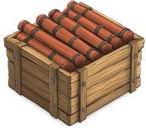
Dynamite supply×3 · not a hazard
- 3 sticks, kept off the board in the dynamite supply. Dynamite is not a hazard: it is never drafted and never in the hazard pool.
- Place Dynamite (3 AP) on the empty square directly in front of you. Not while Cursed. If all 3 are on the board, no one can place dynamite until one explodes.
- Exploded sticks return to the supply. Unexploded sticks stay on the board when a player is eliminated.
- Free moves (Swift Justice, Daring Escape) trigger Bear Traps and Grave Dust too.
- Anything removed from the board (used up, destroyed, blown up) goes back to the pool and can be thrown again.
- Once on the board, a hazard belongs to the board. It stays when a player is eliminated.
Playtest home · FAQ
Stuck on a rule? Ask Adam. He's the one in the hat.